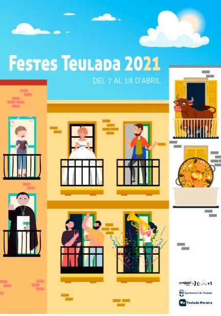

Las mascarillas que deben llevar los niños al colegio
El Ministerio de Educación ya anunció que las mascarillas son obligatorias en los colegios para niños a partir de los seis años.
La vuelta al cole de los niños es la principal preocupación de la sociedad española ante la crisis sanitaria provocada por el coronavirus.El temor a que los contagios se descontrolen en el ámbito escolar está presente entre las familias y el personal docente que tratan de adoptar todas las medidas preventivas que están a su alcance.
Asistir a las clases de forma segura, es la prioridad de todos y por ese motivo se están adaptando protocolos de actuación para una gestión temprana en el caso de localizarse focos de contagio.Es importante cumplir con las normas de seguridad pautadas, y una de las medidas de prevención que se ha implantado es el uso de la mascarilla.
El Ministerio de Educación ya anunció que las mascarillas son obligatorias en los colegios para niños a partir de los seis años.Deberán usarlas en todo momento, incluso en clase y en el transporte escolar, con independencia del mantenimiento de la distancia interpersonal.
A partir de ahora los niños deberán pasar bastantes horas en el colegio con la mascarilla puesta y no estarán bajo la supervisión de sus padres.Razón de más, para que los alumnos lleven una mascarilla adecuada y aprendan como utilizarlas correctamente.
La Sociedad Española de Salud Pública recomienda, en su página web, el uso de mascarillas homologadas para la vuelta de los niños al colegio.Las mascarillas homologadas han demostrado su eficacia, mientras que las otras no.
Existen diversos tipos de mascarillas homologadas:
Las mascarillas quirúrgicas: son las que vemos en el ámbito sanitario.Suelen ser de un solo uso, y se pueden usar hasta ocho horas seguidas.Las mascarillas no reutilizables se desecharán después del uso recomendable, más o menos al terminar la jornada escolar del niño.
Las mascarillas higiénicas: este tipo de mascarillas evitan que se expulsen gotículas y son las ideales para utilizar en el colegio.Son las más económicas, permiten respirar mejor y pueden ser desechables o reutilizables.Según el ministerio de Sanidad, las mascarillas higiénicas, ya sean desechables o de tela, deben cambiarse a las cuatro horas de uso.
Las mascarillas homologadas deben cumplir con el protocolo UNE 0064.Si el niño va a utilizar una mascarilla reutilizable el protocolo es el UNE 0065.En cuanto a las mascarillas quirúrgicas tienen que estar marcadas con la numeración UNE EN 14683.
En primer lugar, es recomendable que los escolares lleven una o dos mascarillas de repuesto en la mochila para que se la puedan cambiar en caso de que sea necesario.
Las mascarillas deben ser adecuadas a la edad del niño.Existen mascarillas infantiles en tres tallas, según la edad del niño: pequeña (para niños de 3 a 5 años), mediana (para niños de 6 a 9 años) y grande (para niños de 9 a 12 años).
Por otra parte, es importante recordar a los niños que las mascarillas no se pueden compartir, son de uso personal, y para evitar posibles contagios se aconseja escribir el nombre del alumno.
En el caso de utilizar una mascarilla higiénica de tela, se deberá lavar de la forma adecuada para evitar posibles contagios entre los niños.
Por último, se debe enseñar a los más pequeños como se manipula una mascarilla y si tienen que quitársela que sepan como se hace correctamente.Además, se recomienda llevar una bolsa o portamascarillas donde poder guardarla.
Posted On: 2020-09-07T00:00:00

Content Date: 2020-09-07
Download Date: 2021-04-21
Document ID: L0C04AID1